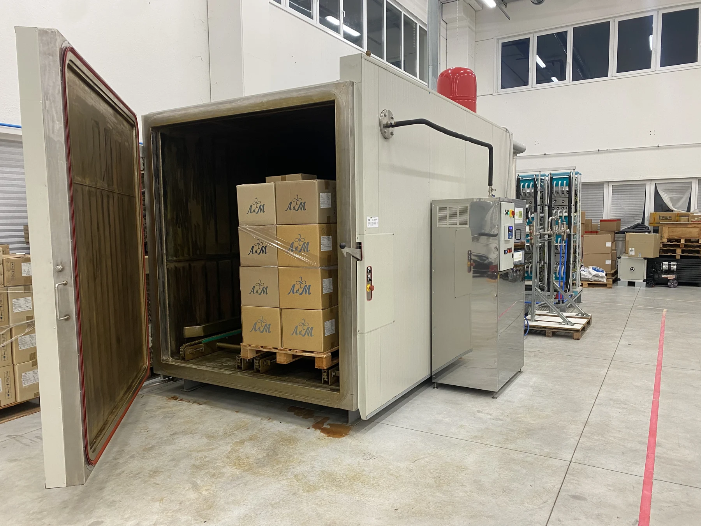
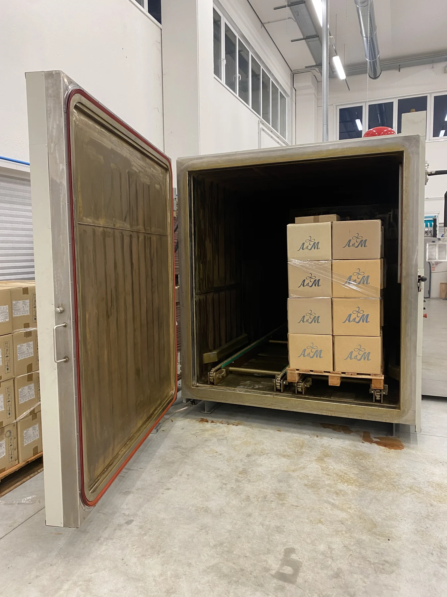
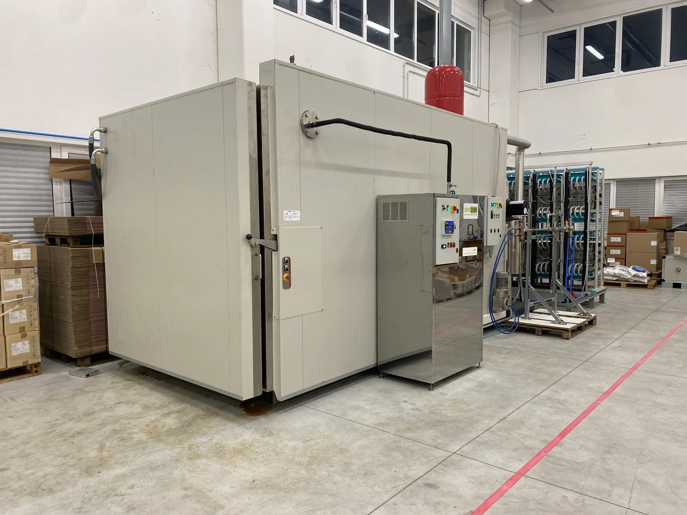

Rethinking
sterilisation.
Starting with air.
PLASMA O3 is A.d.M.'s research and development project exploring an alternative to ethylene oxide for the sterilisation of medical devices*.

Exploring a path
without EtO.
Changing the approach to sterilisation means studying the process as a whole.
The project explores a low-temperature technology that does not use ethylene oxide (EtO) as the sterilising agent. Medical devices, their materials, packaging and treatment conditions are central to this work.
The aim is to bring research closer to industrial process requirements.
From air to chamber.
A four-stage journey.
From air preparation to the end of the cycle: four stages illustrate the approach being developed by A.d.M**.
- 01
Prepare the air
Air is dried and fed into the generator.
- 02
Generate plasma
Plasma enables ozone and other reactive species to be generated from air.
- 03
Treat the load
The mixture enters the chamber containing the packaged devices.
- 04
Manage the end of the cycle
The approach includes extracting and destroying residual ozone before opening the chamber.
The technology,
up close.
The footage shows a tangible part of the work: illuminated reactors during operation. A detail of the plant that can be observed directly.
Video description
The footage shows circular reactor elements glowing violet in a dark environment. There is no audio.
A chamber.
A real load.
A research journey.
The pilot plant is where the project takes physical shape.
The updated photographs show the chamber and the arrangement of packaged devices. They provide the physical context for development and validation activities.


Project notes
PLASMA O3 is a research and development project undergoing validation. The technology is not yet available for routine use. Process efficacy and material compatibility must be demonstrated under the specific conditions of use. ↩
The process is shown in simplified form and is not an operating protocol. Test data, parameters and technical documentation are shared through a dedicated process that respects confidentiality. ↩
The images and video document the plant and reactors; they do not constitute evidence of sterilisation efficacy or equivalence with already validated processes. ↩